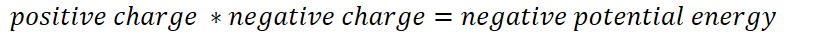
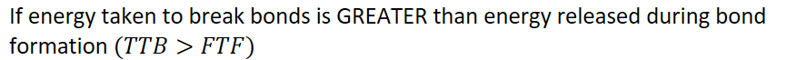
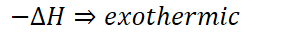
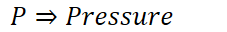
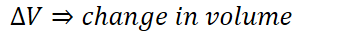

The energy balancing act
It takes energy to break bonds and attractive forces
Energy is freed when forming bonds and attractive forces
{width="7.625in" height="0.3541666666666667in"}
In a constant pressure system, the net energy change is called:
Example - a magnet
Takes force to pull two magnets apart
When two magnets are placed close to each other they stick together
Coulomb's law:
{width="8.645833333333334in" height="0.3333333333333333in"}
The more negative the potential energy, the more energetically favorable
System
System - the part of the universe we are studying
Where bonds are broken/formed, etc
Molecular/ionic level
<!-- -->
{width="9.239583333333334in" height="0.6875in"}
Net positive
{width="3.2604166666666665in" height="0.3541666666666667in"}
Energy is required - energy ENTERING the system
{width="9.239583333333334in" height="0.6875in"}
Net negative
{width="3.0625in" height="0.3333333333333333in"}
Energy is released - energy LEAVES the system
Phase changes
Solid => liquid => gas: ENDOthermic
Gas => liquid => solid: EXOthermic
Dissolving of an ionic salt: AMBIGUOUS change
Both a physical and chemical change
Ionic bonds are broken (chemical change)
Salt can be dissolved then gotten back by evaporating water
Breaking: (+)
Ionic bonds are broken (Ex. Na, Cl)
Hydrogen bonds are broken between water molecules
Making: (-)
The surroundings
First law of thermodynamics - energy cannot be created nor destroyed
Where does the energy go, if released?
Where does the energy come from, if required?
Work
{width="3.125in" height="0.3333333333333333in"}
Change in volume by at a constant pressure
{width="2.3645833333333335in" height="0.3333333333333333in"}
{width="3.6041666666666665in" height="0.3333333333333333in"}
Gas expansion => exothermic
Gas compression => endothermic
Exothermic flow
System can:
{width="4.8125in" height="0.3541666666666667in"}
{width="5.71875in" height="0.3541666666666667in"}
Endothermic flow
System can:
{width="4.854166666666667in" height="0.3541666666666667in"}
{width="7.166666666666667in" height="0.3541666666666667in"}
Surroundings are everything that is external to the system
We measure our surroundings in the laboratory